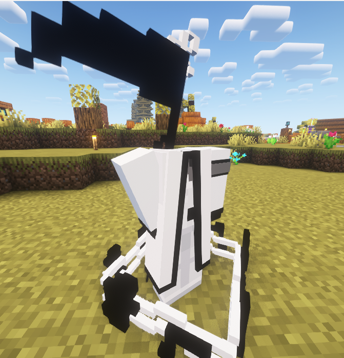
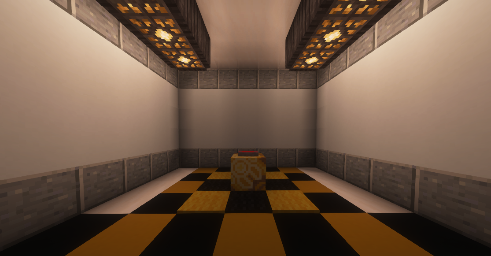
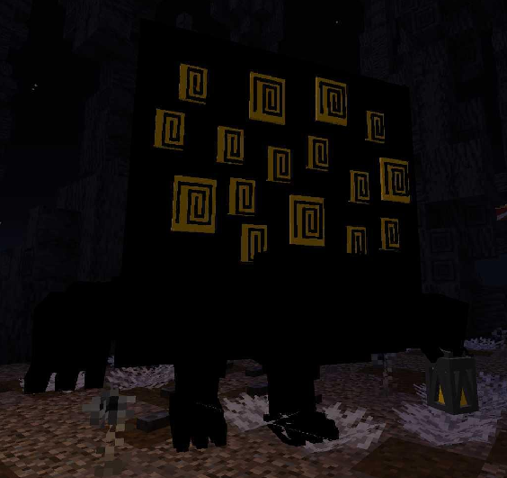

Registros de Anomalias
Como funcionário da A.F.A, seu dever é registrar o máximo de informações possíveis sobre as anomalias, incluindo anotações, imagens, interações e eventos relevantes.
Entretanto, é necessário cautela. As anomalias não são entidades comuns: elas podem variar desde objetos aparentemente inofensivos até entidades capazes de causar destruição em larga escala.
Nomeclaturas
- 🕸️ T — Originada de traumas ou fobias (T-01)
- ✨ F — Originada de contos de fada ou histórias (F-019)
- ⚙️ M — Originada de maquinaria amaldiçoada (M-030)
- ❔ D — Origem desconhecida (D-X)
- ☯️ R — Origem religiosa ou filosófica (R-05)
Níveis de Perigo
- 🟦 TETH — Podem causar danos significativos
- 🟨 HE — Podem causar mortes
- 🟪 WAW — Capazes de causar caos generalizado
- 🟥 ALEPH — Capazes de destruição em massa

T-01 — Operalia


D-03 — O Botão



D-07 — Big Bird